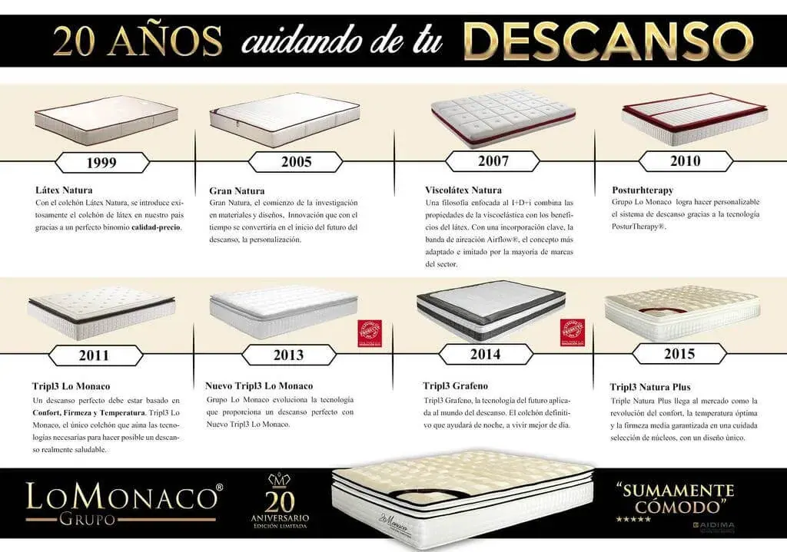

Del Látex Natura al Triple Natura Plus: 20 años de colchones

El origen de los colchones de Grupo Lo Monaco, se remonta al inicio de los años 90, cuando la compañía apostó por un colchón casi invisible en nuestro país, pero que aseguraba un descanso de calidad: el colchón Látex Natura. Corría el 1999, y en España la mayoría se decantaba por colchones de muelles. Ante este panorama, los colchones de látex ocupaban una posición poco conocida, mientras que en EEUU o Reino Unido ya eran líderes en ventas.
Todos los factores eran adversos, un producto poco conocido y un método de venta transgresor, sin embargo, los beneficios del látex aplicados al descanso pronto ganaron la partida. El equipo de profesionales que formaba Grupo Lo Monaco, siguió apostando por evolucionar una gama de colchones que aseguraba el dormir bien, pero que podía mejorarse. Surge entonces en 2005 el colchón Gran Natura, que incorporaba avances con respecto a su predecesor.
La apuesta por la innovación de Grupo Lo Monaco comenzó a hacerse patente, y pronto se comenzaba a combinar materiales que podían potenciar los beneficios del látex. El colchón Viscolatex Natura, que ve la luz en 2007, incorpora una capa de viscoelástica en su superficie que, en perfecta proporción con el látex, dota al conjunto de una adaptabilidad perfecta y ante la evidencia de la necesidad de la correcta ventilación del núcleo, se dotaba al colchón de un elemental sistema Airflow®. A partir de este modelo de colchón, el trabajo en I+D+i de la compañía es vertiginoso e imparable: se suceden las mejoras gama tras gama, la personalización del sistema de descanso con Posturtherapy, Triple Lo Monaco, o la materialización en una línea de colchones de los beneficios para dormir: confort, firmeza y temperatura, el colchón Grafeno, que incluía el innovador viscografeno en su núcleo… Grupo Lo Monaco se posicionaba en el mercado del colchón como la compañía líder en descanso.
Comprobada la conveniencia de dormir sobre superficies de firmeza media, con la gama Nuevo Triple se amplió la selección de materiales con los que conformar un núcleo, ofreciendo diferentes sensaciones finales. Con Triple Natura Plus además se añade un doble topper, para poder notar una sensación de confort ampliada (Cloudsense Plus) y un sistema de aireación 360º (Airflow®Plus 360º) para optimizar el flujo constante de aireación, que asegure la temperatura perfecta.
Tras 20 años de historia, Grupo Lo Monaco hemos cambiado, pero seguimos con el mismo objetivo: llevarte a casa el mejor de los sueños posible.